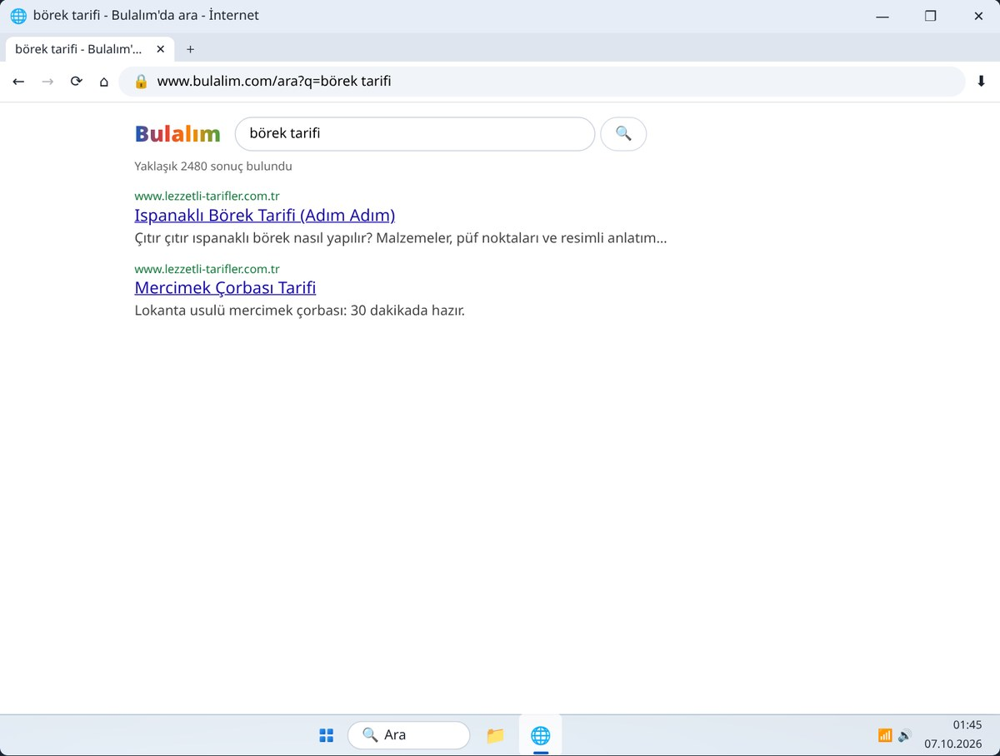
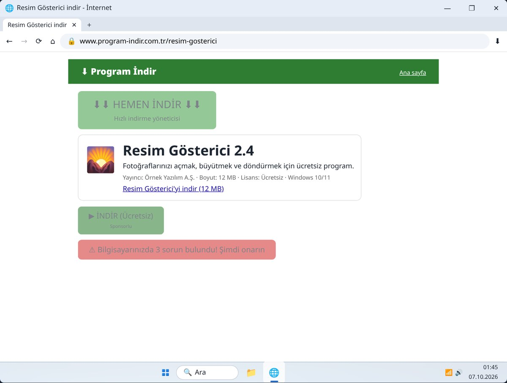
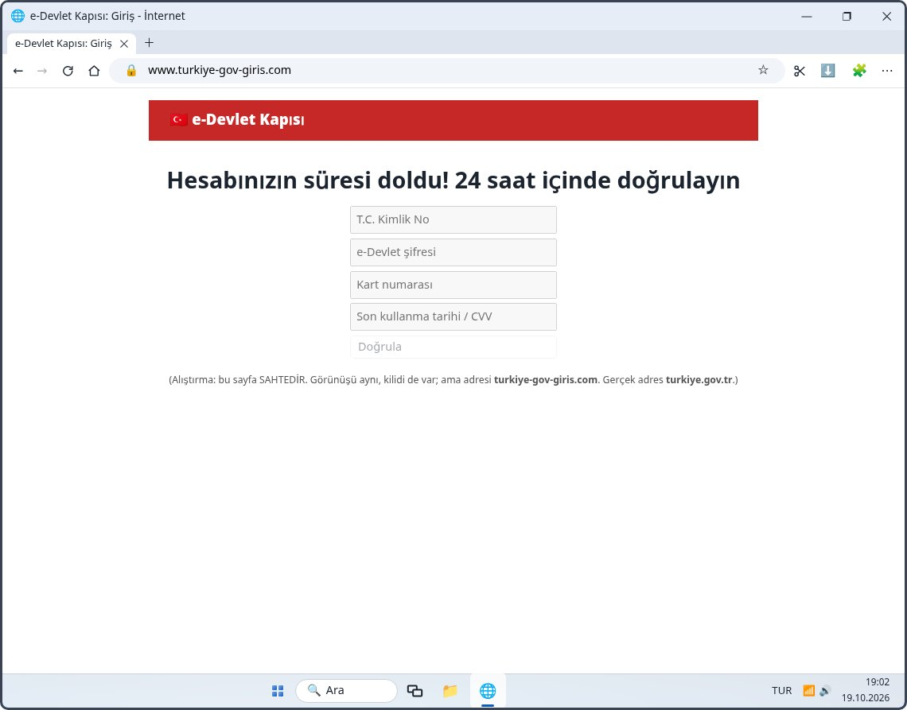
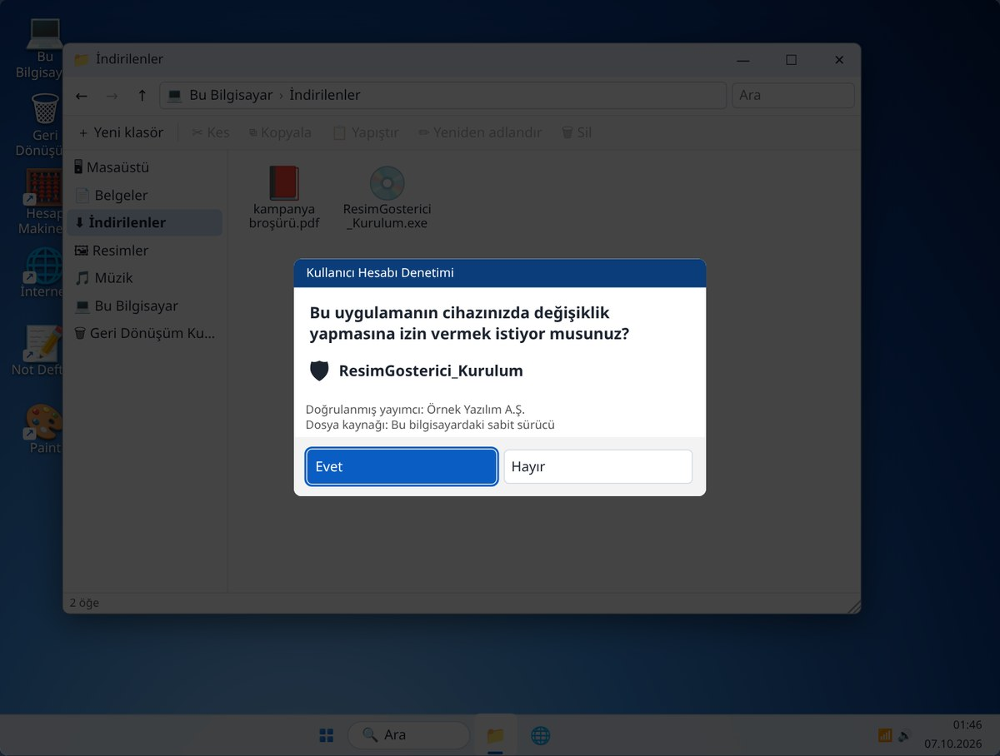
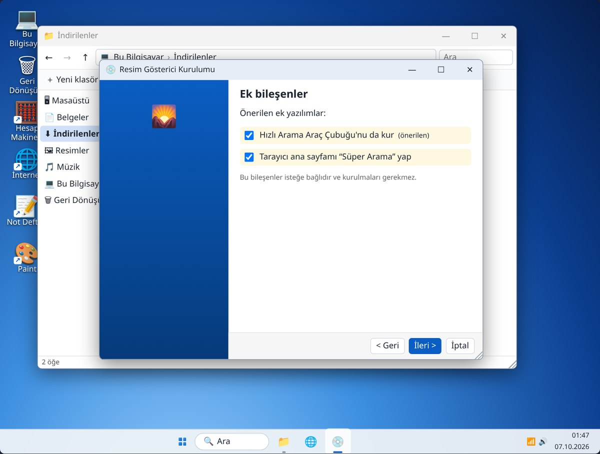
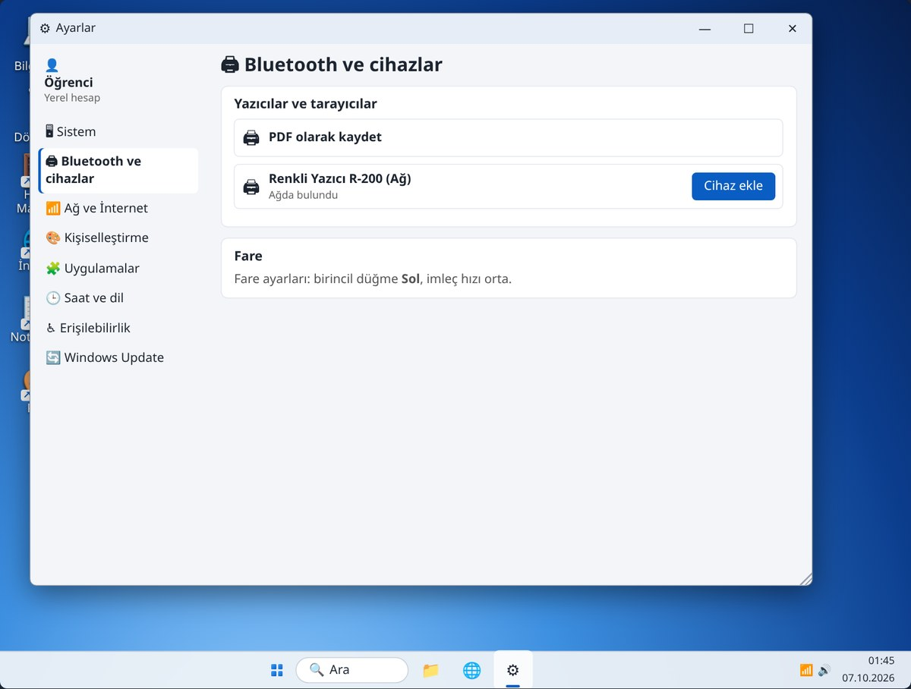
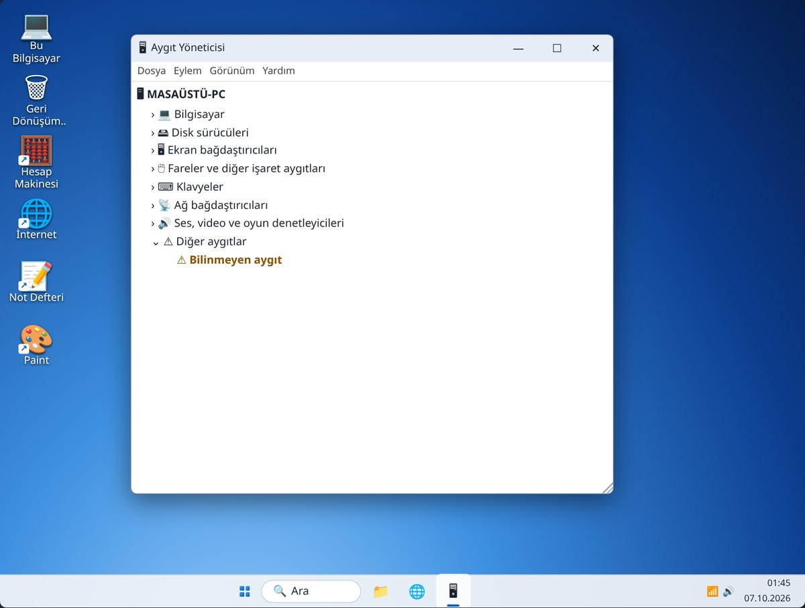
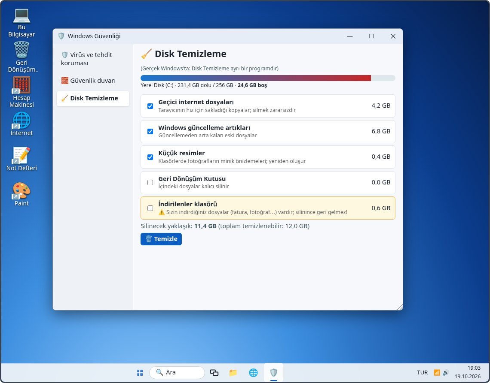
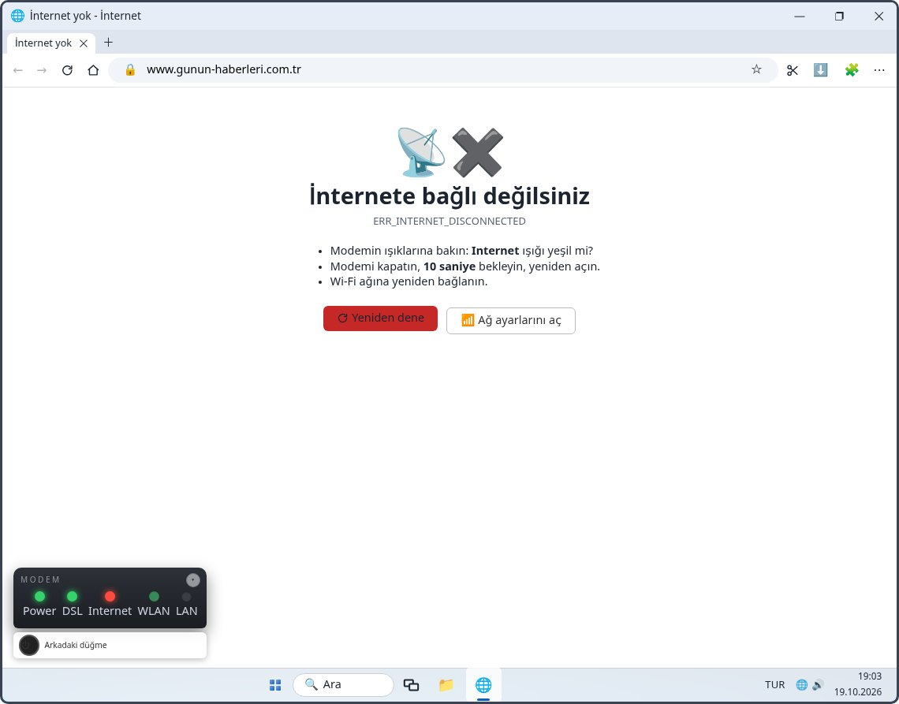
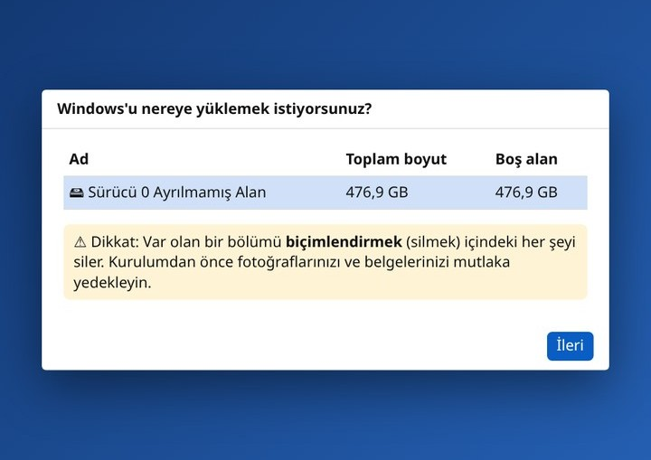

8. Hafta: İnternet, program kurma, yazıcı ve işletim sistemi
Alıştırmalar
Bu hafta
| 1 İnternette gezinme ve indirme | 25 dk |
|---|---|
| 2 Tarayıcılar: Edge, Chrome, Firefox | 25 dk |
| 3 İnternet adresini (URL) okumak | 40 dk |
| 4 İnternette bilgi bulmak | 25 dk |
| 5 Arama motorları | 35 dk |
| 6 Video, radyo ve gazete | 35 dk |
| 7 Video kalitesi ve Hz | 30 dk |
| 8 Ekrandaki İngilizce kelimeler | 25 dk |
| 9 İnternetteki tuzaklar | 20 dk |
| 10 Program kurma ve kaldırma | 20 dk |
|---|---|
| 11 Yazıcı ve sürücüler | 20 dk |
| 12 Virüs taraması, Disk Temizleme | 30 dk |
| 13 Virüsler ve antivirüs | 30 dk |
| 14 İnternet kesildi! | 25 dk |
| 15 İşletim sistemleri | 40 dk |
| 16 İşletim sistemi kurulumu | 20 dk |
| 17 İnternet parkuru | 25 dk |
Hafta sonunda: ödev (gerçek bilgisayarda sekiz küçük görev) ve 16 soruluk test.
Ders 1 · İnternet
Sonuçların en üstünde Reklam yazanlar reklamdır.

Ders 1 · İnternet

Ders 2 · Tarayıcılar
| Tarayıcı | İnternet sitelerini açan program: Edge, Chrome, Firefox, Safari, Opera, Brave. Kütüphane binası |
|---|---|
| Arama motoru | Sitelerin fihristi: Google, Bing, Yandex, DuckDuckGo. Tarayıcının içinde açılır |
| Hangisi? | Hepsi aynı işi yapar. Windows’ta Edge hazır gelir; Chrome şart değil |
| Gizli pencere | Edge: InPrivate; Chrome ve Firefox: Gizli pencere |
Ders 3 · Adres (URL) okumak
| Alan adı | “www.”dan sonra, ilk “/”a kadar: turkiye.gov.tr |
|---|---|
| Sağdan sola okuyun | bankam.com.tr.hesap-dogrulama.xyz → site hesap-dogrulama.xyz’nindir |
| .gov.tr · .edu.tr · .bel.tr | Yalnızca devlet · üniversite · belediye alabilir |
| .com, .xyz | Herkes alabilir |
| 🔒 Kilit | Bağlantı şifreli demektir; site dürüst demek değildir |
| ⚠ Güvenli değil | Şifre ve kart bilgisi girmeyin |
Bildirim izni isteyen tanımadığınız siteye Engelle. Adresi paylaşmak: adres çubuğuna tıklayıp Ctrl + C.

Ders 4–5 · Aramak
| Kısa arama | izmir hava durumu, mercimek çorbası tarifi: birkaç kelime yeter |
|---|---|
| Sonuç satırı | Mavi başlık: bağlantı · gri: sitenin adresi · kısa açıklama |
| Reklam | “Reklam” yazan sonuçlar parayla yukarı çıkar; atlayın |
| Sekmeler | Tümü, Görseller, Haberler |
| Tırnak | “su abonelik başvuru formu”: cümle olduğu gibi aranır |
Ders 6–7 · Video, radyo, gazete
| Reklamı atla ▶ | Birkaç saniye sonra çıkar; reklamın kendisine tıklamayın |
|---|---|
| ⛶ Tam ekran | Çıkmak için Esc |
| CC | Altyazı açar / kapatır |
| ⚙ Hız | 0,75x ya da 0,5x: konuşma rahat anlaşılır |
| 📻 Radyo | Kanalın yanındaki ▶ Dinle |
| Gazete | “Sponsorlu” kutular reklam; “Galeri” sayfaları oyalar; ✕ ile kapatın |
| 144p … 1080p, 4K | Videonun netliği; sayı büyüdükçe daha çok internet harcar |
|---|---|
| Kotalı internet | Telefonda 360p ya da 480p; 4K bir saatte ≈ 7 GB |
| 60 Hz | Ekran saniyede 60 kez yenilenir; ofis ve internet için yeterli |
| Çözünürlük | “Önerilen” yazanı seçin; yazıyı büyütmek için Ölçek ya da Metin boyutu |
Ders 8 · İngilizce kelimeler
| OK · Yes · Next · Continue | Tamam · Evet · İleri · Devam |
|---|---|
| Cancel · No · Back · Close | İptal · Hayır · Geri · Kapat |
| Skip · Later · Remind me later | Atla · Sonra · Sonra hatırlat |
| Allow · Block | İzin ver · Engelle |
| Accept all · Reject all | Hepsini kabul et · Hepsini reddet |
| Download · Install · Update | İndir · Kur · Güncelle |
| Save · Don’t save | Kaydet · Kaydetme |
| Sign in · Sign up · Sign out | Giriş yap · Kayıt ol · Çıkış yap |
Emin değilseniz Cancel ya da ✕: hiçbir şey değiştirmeden kapatır.
Ders 9 · Tuzaklar
| Büyük renkli İNDİR | Genellikle reklam; programın adının yazdığı sade bağlantıyı kullanın |
|---|---|
| “Kazandınız!” | Kapatın; kimse bedava telefon vermez. Geri sayım acele ettirmek içindir |
| “Bildirim göstermek istiyor” | Engelle |
| “Programınız eski, güncelleyin” | Siteden değil; Windows Update’ten ya da programın kendisinden |
| Çerez penceresi | Kabul ya da Reddet; ikisi de güvenli |
| Benzer adres | Harf harf okuyun: bankam / bankarn |
Ders 10 · Program kurma


Ders 10 · Program kurma
| 1 | …Kurulum.exe dosyasına çift tıklayın, izin sorusuna Evet deyin. |
|---|---|
| 2 | Hoş geldiniz → İleri. Lisansı kabul ediyorum seçmeden İleri çalışmaz. |
| 3 | Kurulum yeri → İleri. “Önerilen” ek yazılımların işaretini kaldırın. Sonra Kur, Son. |
| 4 | Kaldırmak için: Başlat → Ayarlar → Uygulamalar → programın yanındaki Kaldır. |
Yalnızca güvendiğiniz yerden indirdiğiniz programları kurun.
Ders 11 · Yazıcı ve sürücüler

Ders 11 · Yazıcı ve sürücüler

Ders 12 · Bakım
| 🛡 Windows Güvenliği | Windows’un kendi virüs programı; ek program gerekmez |
|---|---|
| ⚡ Hızlı tarama | Birkaç dakikada tarar |
| USB belleği tara | Başkasından aldığınız belleği açmadan önce |
| 🧱 Güvenlik duvarı | Açık kalmalı. “Kapatın” diyen site şüphelidir |
| 🧹 Disk Temizleme | Geçici dosyaları siler, yer açar. İndirilenler’i işaretlemeyin |
Siteden çıkan “7 virüs bulundu” yazısına inanmayın; kendiniz Windows Güvenliği ile tarayın.

Ders 13 · Virüsler
| Nasıl bulaşır? | Tanımadığınız e-posta eki, “bedava” programlar, başkasının USB’si, sahte “güncelle” düğmeleri |
|---|---|
| Belirtiler | Birden yavaşlama, açılır reklamlar, değişen ana sayfa, tanımadığınız programlar |
| Antivirüs | Windows Güvenliği hazır gelir. İki antivirüs birbirini bozar |
| Fidye yazılımı | “Dosyalarınız şifrelendi” diyorsa para göndermeyin; yedekten dönün |
| 1 | İnterneti kesin (Wi-Fi’yi kapatın). |
|---|---|
| 2 | Windows Güvenliği ile tam tarama. |
| 3 | Tanımadığınız programı Ayarlar → Uygulamalar’dan kaldırın. |
| 4 | Şifreleri başka bir cihazdan değiştirin. |
En iyi savunma: önemli dosyaların düzenli yedeği.
Ders 14 · İnternet kesildi!
| Power · DSL · Internet | Elektrik var mı · hat geliyor mu · internete bağlandı mı |
|---|---|
| Internet ışığı sönük / kırmızı | Modemi kapatın, 10 saniye bekleyin, açın; ışıklar için 2–3 dakika bekleyin |
| DSL ışığı hiç yanmıyor | Hat gelmiyor: kabloları kontrol edin, düzelmezse internet şirketini arayın |
| Kişisel Erişim Noktası | Telefonun internetini bilgisayara paylaşır; mobil veriden harcar |
| Hız testi | Görüntülü görüşmeye 3 Mbps, film için 5 Mbps yeter |

Ders 15 · İşletim sistemleri
| Windows 7 (2009) | Yuvarlak Başlat düğmesi; desteği 2020’de bitti |
|---|---|
| Windows 8 (2012) | Kutucuklu Başlat ekranı; destek 2023’te bitti |
| Windows 10 (2015) | Başlat menüsü geri geldi; ücretsiz destek Ekim 2025’te bitti |
| Windows 11 (2021) | Simgeler ortada; yeni bilgisayar ister |
| Linux | Ücretsiz, açık kaynak: Ubuntu, Mint, Pardus |
| Pardus | TÜBİTAK ULAKBİM’in yerli Linux’u; okul akıllı tahtalarında (ETAP) |
Ders 16 · İşletim sistemi (gösterim)

Ders 16 · İşletim sistemi (gösterim)
| Dil ve klavye | Türkçe, Türkçe Q → İleri |
|---|---|
| Şimdi yükle | “Bilgisayarınızı onarın” bozuk Windows’u onarmak içindir |
| Ürün anahtarı | Daha önce etkinleştirilmişse Ürün anahtarım yok |
| Yükleme türü | Özel: Yalnızca Windows’u yükle (temiz kurulum) |
| Disk | Biçimlendirme her şeyi siler: uyarıyı okuyun |
| İlk ayarlar | Bölge, klavye, internet (EvAğı), ad, PIN, gizlilik |
Ders 17 · Tekrar
Nasıl yapılacağı yazmaz; takılınca 💡 İpucu. Son ekranda her görevin süresi görünür.
Özet
| Adres çubuğu | Adres biliniyorsa yazın; bilinmiyorsa kelimelerle arayın |
|---|---|
| Tarayıcı · arama motoru | Edge, Chrome · Google, Bing |
| Alan adı | Sağdan sola okuyun; .gov.tr devletindir |
| 🔒 Kilit | Şifreli bağlantı; dürüst site demek değil |
| “Reklam” · “İNDİR” | Atlayın; sade bağlantıyı kullanın |
| Cancel · Allow · Skip | İptal · İzin ver · Atla |
| İzin penceresi | Siz indirdiyseniz Evet; tanımıyorsanız Hayır |
| Önerilen ek yazılımlar | İşaretlerini kaldırın |
|---|---|
| Sürücü | Aygıt Yöneticisi’nde sarı ünlem = eksik |
| Windows Güvenliği | Hızlı tarama, USB belleği tara |
| Disk Temizleme | Yer açar; İndirilenler’e dikkat |
| Modem | Kapat, 10 saniye bekle, aç |
| winver | Hangi Windows sürümü? |
| İşletim sistemi kurulumu | Önce yedek! |
Ödev: kendi bilgisayarınızda sekiz küçük görev; ödev kâğıdı yazdırılabilir. Test: 16 soru, tekrar içindir.